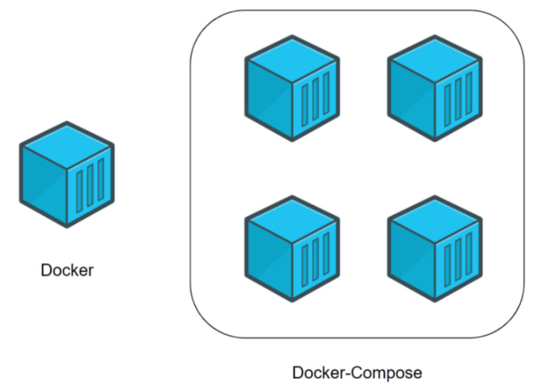
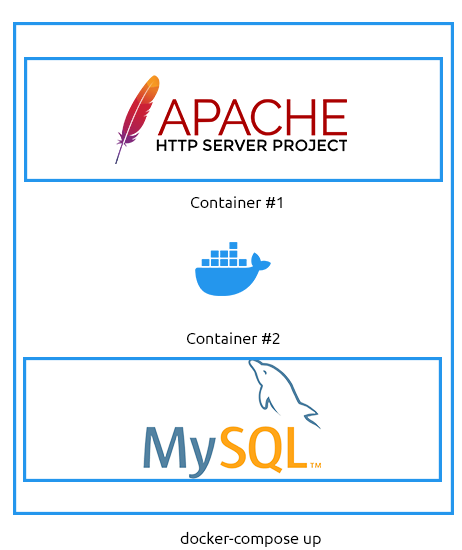
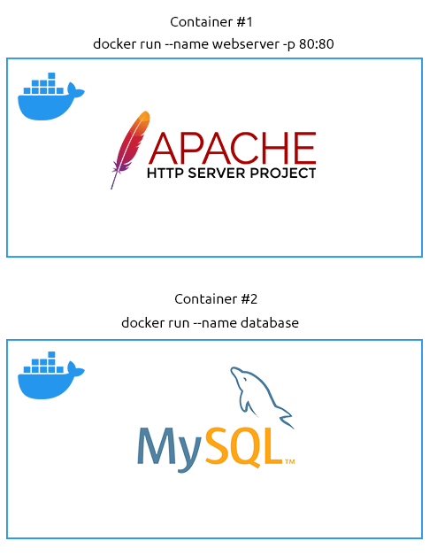

Docker Compose
Let’s first understand what Docker Compose is and why it’s worth understanding. So far, we’ve only interacted with containers individually. Docker Compose, in summary, allows multiple containers (or applications) to interact with each other when needed while running in isolation from one another.
You may have noticed a problem with Docker so far. More often than not, applications require additional services to run, which we cannot do in a single container. For example, modern - dynamic - websites use services such as databases and a web server. For the sake of this task, we will consider each application as a “microservice”.
While we can spin up multiple containers or “microservices” individually and connect them, doing so one by one is cumbersome and inefficient. Docker Compose allows us to create these “microservices” as one singular “service”.
This illustration shows how containers are deployed together using Docker Compose Vs. Docker:
Before we demonstrate Docker Compose, let’s cover the fundamentals of using Docker Compose.
1.
We need Docker Compose installed (it does not come with Docker by default). Installing it is out of scope for this room, as it changes depending on your operating system and other factors. You can check out the installation documentation here.2. We need a valid
docker-compose.yml file - we will come onto this shortly.
3. A fundamental understanding of using Docker Compose to build and manage containers.
I have put some of the essential Docker Compose commands into the table below:
| Command | Explanation | Example |
|---|
| up | This command will (re)create/build and start the containers specified in the compose file. | docker-compose up |
| start | This command will start (but requires the containers already being built) the containers specified in the compose file. | docker-compose start |
| down | This command will stop and delete the containers specified in the compose file. | docker-compose down |
| stop | This command will stop (not delete) the containers specified in the compose file. | docker-compose stop |
| build | This command will build (but will not start) the containers specified in the compose file. | docker-compose build |
Note
: These are just a few of the possible commands. Check out the
compose documentation for all possible options.
A Showcase of Docker Compose
With that said, let’s look into how we can use Docker Compose ourselves. In this scenario, I am going to assume the following requirements:1.
An E-commerce website running on Apache2.
This E-commerce website stores customer information in a MySQL databaseNow, we could manually run the two containers via the following:
1. Creating the network between the two containers:
docker network create ecommerce2. Running the Apache2 webserver container:
docker run -p 80:80 --name webserver --net ecommerce webserver3. Running the MySQL Database server:
docker run --name database --net ecommerce webserverAn illustration shows two containers running independently of each other and is unable to communicate with one another.…but do we want to do this every time? Or what if we decide to scale up and get many web servers involved? Do we want to do this for every container, every time? I certainly don’t.
Instead, we can use Docker Compose via
docker-compose up to run these containers together, giving us the advantages of:
1. One simple command to run them both
2. These two containers are networked together, so we don’t need to go about configuring the network.
3. Extremely portable. We can share our
docker-compose.yml file with someone else, and they can get the setup working precisely the same without understanding how the containers work individually.
4. Easy to maintain and change. We don’t have to worry about specific containers using (perhaps outdated) images.
An illustration showing two containers deployed as a combined service. These two containers can communicate with one another.Docker-compose.yml files 101
One file to rule them all. The formatting of a
docker-compose.yml file is different to that of a Dockerfile. It is important to note that YAML requires indentation (a good practice is two spaces which must be consistent!). First, I’ll show some of the new instructions that you will need to learn to be able to write a
docker-compose.yml file before we go into creating a
docker-compose.yml file:
| Instruction | Explanation | Example |
|---|
| version | This is placed at the top of the file and is used to identify what version of Compose the docker-compose.yml is written for. | '3.3' |
| services | This instruction marks the beginning of the containers to be managed. | services: |
| name (replace value) | This instruction is where you define the container and its configuration. "name" needs to be replaced with the actual name of the container you want to define, i.e. "webserver" or "database". | webserver |
| build | This instruction defines the directory containing the Dockerfile for this container/service. (you will need to use this or an image). | ./webserver |
| ports | This instruction publishes ports to the exposed ports (this depends on the image/Dockerfile). | '80:80' |
| volumes | This instruction lists the directories that should be mounted into the container from the host operating system. | './home/cmnatic/webserver/:/var/www/html' |
| environment | This instruction is used to pass environment variables (not secure), i.e. passwords, usernames, timezone configurations, etc. | MYSQL_ROOT_PASSWORD=helloworld |
| image | This instruction defines what image the container should be built with (you will need to use this or build). | mysql:latest |
| networks | This instruction defines what networks the containers will be a part of. Containers can be part of multiple networks (i.e. a web server can only contact one database, but the database can contact multiple web servers). | ecommerce |
Note: These are just some of the possible instructions possible. Check out the compose file documentation for all possible instructions.With that said, let’s look at our first docker-compose.yml file. This
docker-compose.yml file assumes the following:
1. We will run one web server (named web) from the previously mentioned scenario.
2. We will run a database server (named database) from the previously mentioned scenario.
3. The web server is going to be built using its Dockerfile, but we are going to use an already-built image for the database server (MySQL)
4. The containers will be networked to communicate with each other (the network is called ecommerce).
5. Our directory listing looks like the following:
6. docker-compose.yml
7. web/Dockerfile
Here is what our docker-compose.yml file would look like (as a reminder, it is essential to pay attention to the indentation):
version: '3.3'
services:
web:
build: ./web
networks:
- ecommerce
ports:
- '80:80'
database:
image: mysql:latest
networks:
- ecommerce
environment:
- MYSQL_DATABASE=ecommerce
- MYSQL_USERNAME=root
- MYSQL_ROOT_PASSWORD=helloword
networks:
ecommerce: {kind=link}
{kind=link}
{kind=link}